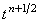

|
2.6. Метод решения с использованием схемы предиктор-корректор.
Преобразуем с помощью метода дробных шагов неявную разностную схему (8.8)
в схему предиктор-корректор:
Первые две подсхемы в схеме предиктор-корректор (8.16) составляют предиктор.
Первая подсхема в составе предиктора аппроксимируется на шаге по времени (n + 1/4) и является неявной
по координате x. Вторая подсхема - аппроксимируется на шаге по времени (n + 1/2) и является неявной по
координате y. Обе подсхемы абсолютно устойчивы.
Третья подсхема в схеме предиктор-корректор (8.16) является корректором. Поскольку корректор
аппроксимируется относительно точки , разностный оператор, аппроксимирующий производную функции u
по времени, является центральной конечной разностью которая, как известно, имеет второй
порядок аппроксимации. Таким образом, схема предиктор-корректор (8.16), имея порядок аппроксимации
является более точной по сравнению со схемой расщепления (8.12).
Каждая из подсхем в схеме предиктор-корректор (8.16) решается с помощью
соответствующего рекуррентного соотношения:
|